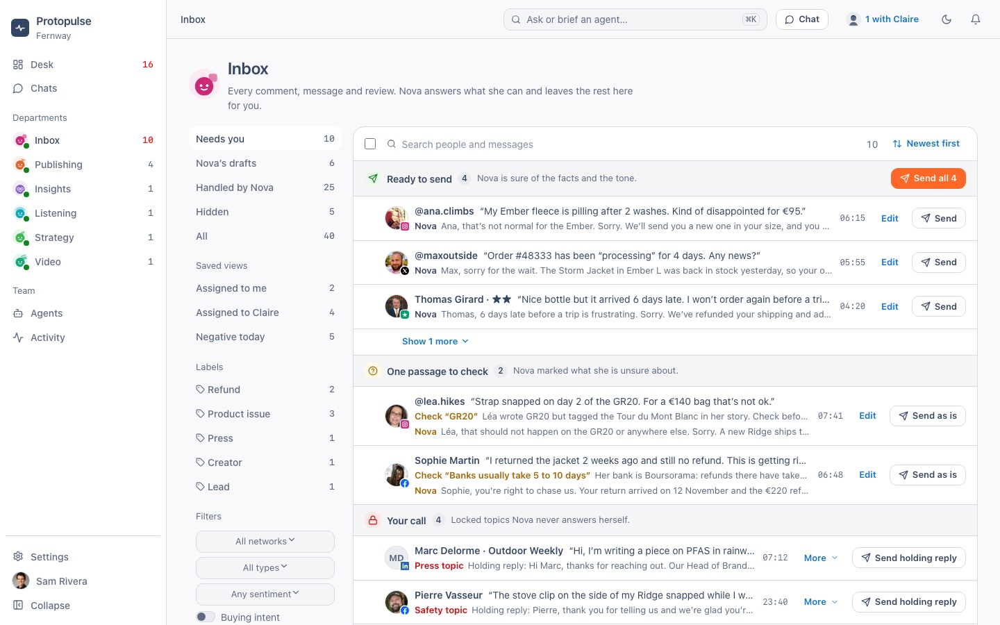
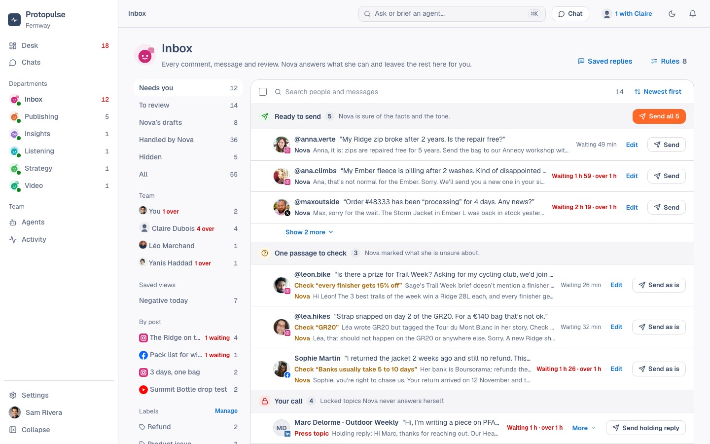
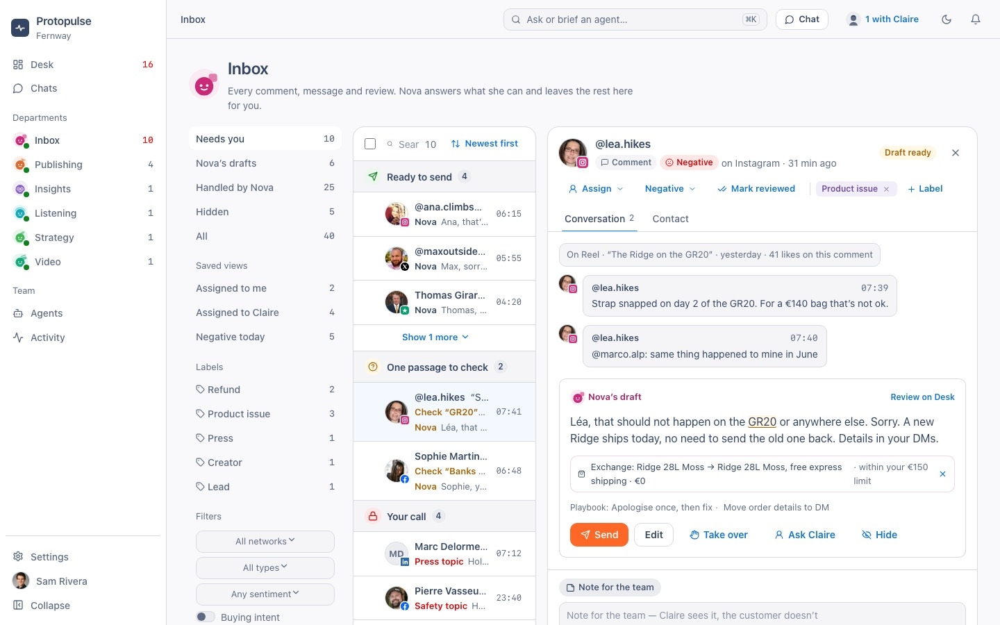
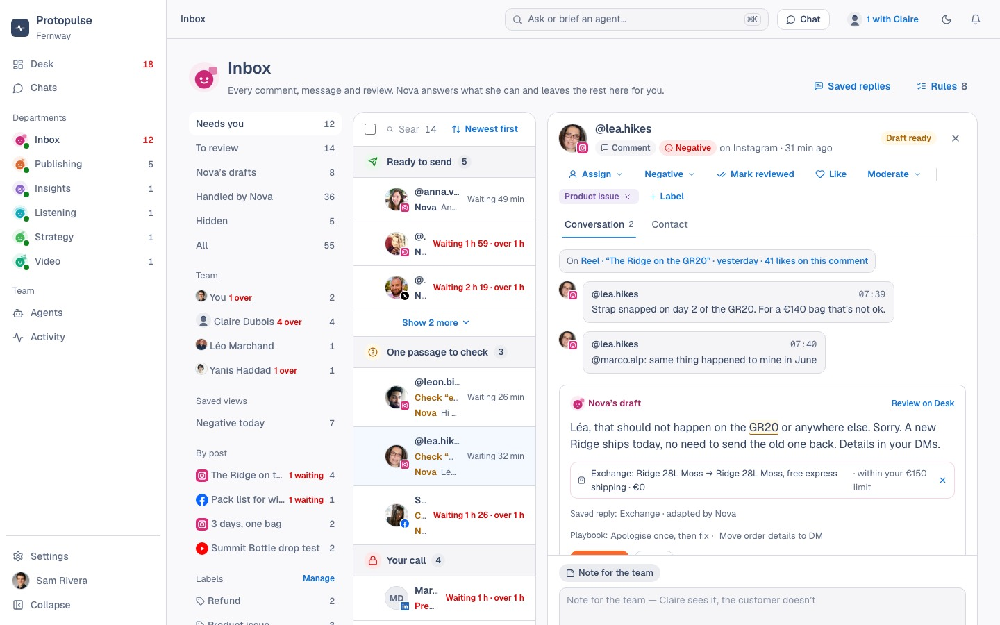
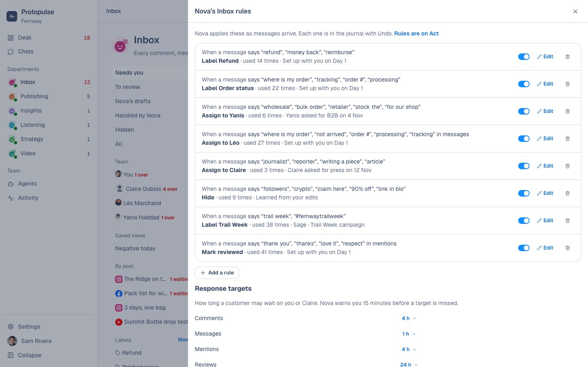
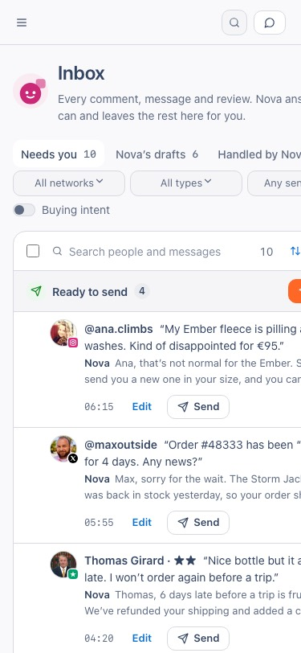
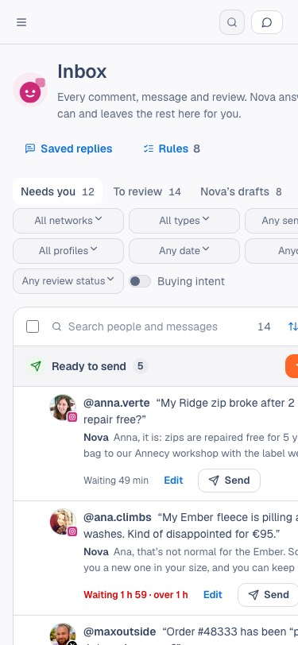

Nova · Inbox depth
25 November 2026. Nova's Inbox brought to Agorapulse's level, agentic-first: Nova triages, labels, assigns, answers and moderates under rules Sam can read and undo, and only what needs a person reaches him, with the reason. 17 pull requests on main, from #23 to #128.
In numbers
Parity, capability by capability
Agorapulse's Inbox (from the agorapulse-product reference) against what Protopulse had on 25/11 at 73a7ba2 and what it has now.
| Agorapulse | Before | Now (agentic version) |
|---|---|---|
| Automated moderation rules | None beyond spam hidden by script | Nova's Inbox rules (words, network, type → label, assign, hide, review, sentiment), applied on arrival on Act, proposed on Draft and Suggest, counted, undoable; created from the Rules panel, ⌘K, Chat, or proposed by Nova after three identical hand labels |
| Review / To review / Review all | A flag and a button | To review view, Nova reviews what she settles alone, Review all with one Undo |
| Saved replies | None | Team library; Nova cites the one she adapted under her draft; composer menu; Save as reply; ⌘K “reply to Léa with the exchange saved reply” |
| Response time (SLA) | None | Waiting time on every row, targets per type, Waiting longest sort, Desk warning 15 minutes before a miss, ⌘K “who is waiting longest?”, numbers exposed to Iris |
| Assign, Assigned to me | Sam or Claire | Team of four; Léo and Yanis answer what is assigned to them; rules assign on arrival; Team section with open and over-target counts |
| Labels | Create only | Rename everywhere (rules included), delete with Undo, campaign labels from Sage |
| Like, Hide, Delete, Spam, Ban, Reply in DM | Hide | All of them, delete said before it happens; bot waves reported by Nova on Act or raised as one card on Draft |
| Filter presets | Three hard-coded views | Date, assignee, review, profile, post filters; Save as view; ⌘K “show me negative Instagram DMs this week” |
| Filter items by post | Post as a text line | Post link opens all its comments with Nova's summary; By post in the sidebar |
| Translate | None | English shown under foreign-language messages and Nova's replies (German, French, Spanish, Italian) |
| Escalation (approval workflows) | Locked action, nothing checked on arrival | Playbook escalations applied on arrival, before the level; Your call or Waiting on Claire, rule quoted |
| Social profiles | Network only | Fernway Repair profile on conversations, Profile filter (Atlas's accounts) |
Before and after








What stays open, and why
- LaterCRM contacts
Contacts view, editable record and timeline, records created by Nova, duplicate merge. Held at the pitch; the Contact tab stays read-only.
- LaterCredible volume
Seed to ~85 and a live trickle handled by Nova. Held at the pitch; the Inbox moves through the scripted events and teammates' replies.
- LaterExport to CSV
Held at the pitch.
- DroppedGuardrails applied
Daily caps and LinkedIn quiet hours stay declarative: refused at the pitch. PROMPT.md §4 says so.
- SkippedApproval workflows, custom inboxes, live collision
Covered by the Suggest · Draft · Act levels and Ask Claire; one brand; no real multi-user session to simulate.
- ContractIris and Echo
responseStatsandwaitingListfor Iris's community report;inbox/ingestfor Echo's mentions. Both requests are indesign-plans/agent-depth/requests/.